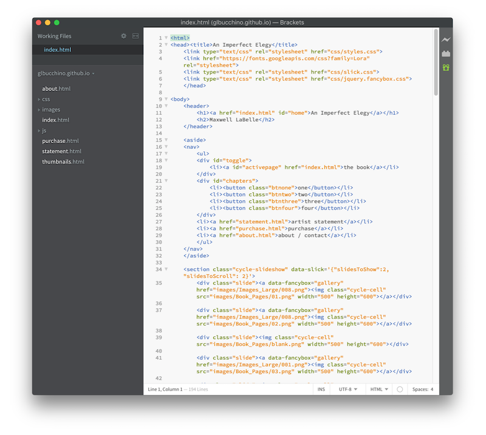

This project was created for Maxwell LaBelle, a senior at Massachusetts College of Art and Design. He is a photography major looking for a website that could become a digital companion to his photobook, “Imperfect Elegy.”
The process for this website began with a basic needs assessment. I sat with Max to discuss what he specifically needed from a website. Immediately, he knew he was not interested in a full portfolio site. He finds that Squarespace can easily host that for him, but he was interested in digitally displaying his latest project, his photobook. He has very limited copies of the book, so he hopes for a way to be able to share the story and photographs with a wider range of people. A big takeaway from the needs assessment was Max’s interest in separating the imagery from a typical slideshow. The book experiments with scale, and that was an element that he hoped could be translated into a digital space.
Being one of the first full scale websites I had ever designed and built from start to finish, the HTML conversion proved that the process does not always go smoothly. Although there were plenty of ups and downs, I feel as though this projects boosted my confidence in HTML, CSS, and some JQuery. My biggest accomplishment on this project was teaching myself CSS grid and JQuery plugins. I’m now able to implement these elements into any future designs.
Similar to how most designers feel about the majority of projects, there is still a lot that could be done on this website. At the time, there were some gaps in my knowledge when it came to coding, specifically in creating a responsive design. If I were to return to this project, a mobile version would be high on my list of priorities. Additionally, there are some missing pieces within the site’s content, which was inevitable as the photobook was a work in progress at the time.